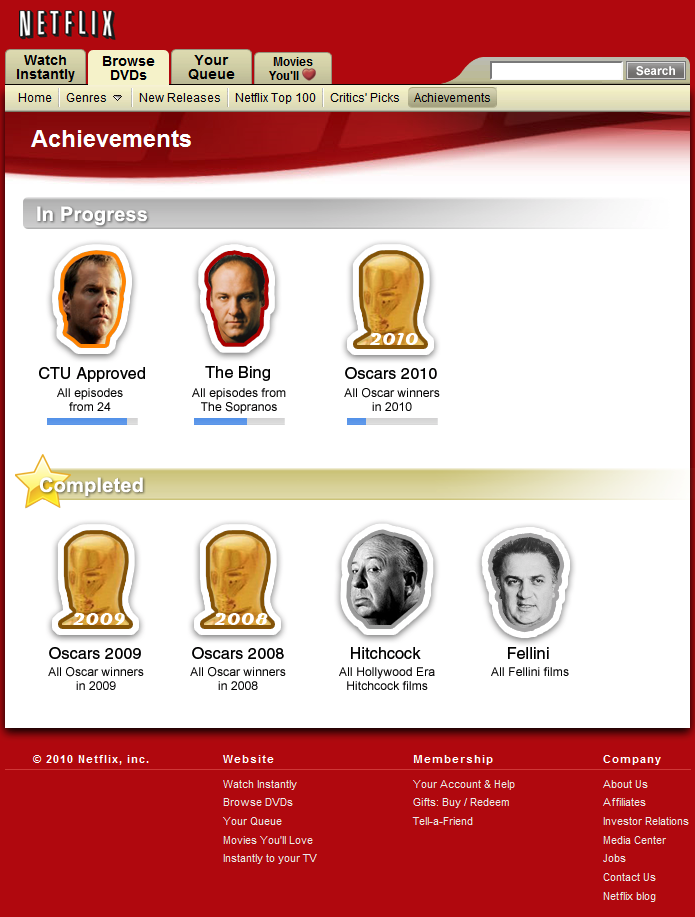

Netflix Achievements (A Design Suggestion)
by phil on Monday Jul 5, 2010 3:43 PM
I play a lot of video games, and one of my favorite mechanics is achievements. Achievements provide little goal posts for gamers to focus in on, and help structure gameplay in a way that maximizes flow. Team Fortress 2, which has a particularly well-designed achievement system, has goals like "Be Efficient: Get 3 kills with the Sniper rifle without missing a shot." So instead of randomly playing the game for an hour, these goals give you something to organize your energy around. And by doing so, you become a better gamer.
When you finish an achievement, the game will award you a nice badge:

This adds a "collection game" on top of the game you're playing. Your goal is now to collect all the badges in a set. And usually, if you get enough badges, you are rewarded with unlocked weapons or special powers.
Achievement systems are highly addictive. You could say that World of Warcraft is simply a variation on the achievement system, and is the primary reason gamers are hooked on it.
But can achievements be applied to other domains? Could they be applied to movie-watching? I experimented with this by creating spreadsheets (that I share with friends), where we track different collections of movies we want to watch. For example, I have a spreadsheet tracking every Woody Allen film, and I have another spreadsheet tracking which of the 500 films in the National Film Registry (up to 2009) that I've watched. By doing this, I watch more movies, and better quality ones, and because of the social aspect, it feels like I'm working toward something with a group.
And then I thought, "This should be automated somehow." At first I thought of programming a facebook app or an iPhone app, and then it hit me, that the perfect place for this would be Netflix.
And so below, I present my mock-up for achievements in Netflix:

I'm not sure Netflix would implement such a system. In March of 2010, Netflix announced the discontinuation of the Friends feature after finding out less than 2% of their customers used it. Also, a lot of movie-watchers dislike games, and so they may not be as susceptible game mechanics.
On the other hand, film aficionados do have a packrat mentality, and I'm sure that many of them, before they became Netflix users, had stacks of DVDs or Videocassettes that they prided over. Actually, all of my friends who use Netflix regularly still have DVD collections.
Perhaps the reason Friend features are less used on Netflix is that when you log in, you enter a walled garden that is personal space. So perhaps achievements would make more sense for free and open services like Hulu.
UPDATE: Half of the fun of creating these UI mock-ups is to see people come out of the woodwork with services they love that do similar things. I just spent 30 minutes on iCheckMovies importing my movies. They also have a list feature which includes the National Film Registry. (via Hacker News)
Comments
Andy Baio said on July 5, 2010 5:39 PM:
You could probably build it yourself using the Netflix API.
Eric Boggs said on July 5, 2010 7:41 PM:
This is a terrible idea. My wife and I are happily addicted to recreational Netflix use. What you're talking about is hardcore sh!t.
Philip Dhingra said on July 5, 2010 7:43 PM:
That's a good point. Most Netflix users I know already have a high-enough churn rate as it is.
Zachary Burt said on July 5, 2010 10:21 PM:
Nice post. You might enjoy this blog post I wrote:
Why Games Are Fun: The Psychology Explanation
Phoebe said on July 6, 2010 2:01 AM:
Game models like this can be fun (and we've seen a lot of them in the wake of Foursquare). But I think they're limited - in terms of the number of people they appeal to, and how long their appeal lasts. As such, they have to be an addition to, rather than a substitute for, a really useful service.
http://www.jinni.com
Geo said on July 7, 2010 3:06 AM:
I'm like you and have to track movies in a spreadsheet at the moment. I'm all for it! I wish IMDB did this.